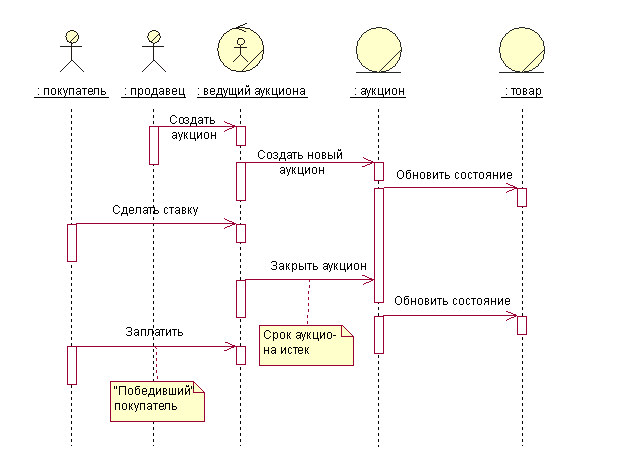

| Концепция: Концептуальное моделирование данных |
 |
|
| Связанные элементы |
|---|
ВведениеКак указано в [NBG01], концептуальное моделирование данных - это первоначальный этап разработки проекта постоянных данных и хранилища постоянных данных для системы. Во многих случаях постоянные данные для системы управляются системой управления реляционной базой данных (RDBMS). Бизнес сущности и системные сущности, определенные на концептуальном уровне в бизнес моделях и системных требованиях будут развиты с помощью задач анализа вариантов использования, проекта вариантов использования и проекта базы данных в детальный проект физических таблиц, которые будут применены в системе управления реляционной базой данных. Обратите внимание, что концептуальная модель данных, обсуждаемая в этом документе - это не отдельный рабочий продукт. Она состоит из смешанных представлений информации, содержащейся в рабочих продуктах Бизнес моделирование, Требования и Дисциплины анализа и проекта, которые связаны с Моделью данных. Развитие Модели данных обычно включает три общие этапа.
Задача проектирования базы данных распространяется на весь жизненный цикл разработки приложения и первая задача проектирования может начаться в течение начального этапа. Для проектов, которые используют бизнес моделирования для описания бизнес контекста приложений, проектирование базы данных может начаться на концептуальном уровне вместе с идентификацией бизнес субъектов и бизнес вариантов выбора в модели бизнес вариантов выбора, а также бизнес исполнителей и бизнес сущностей в модели бизнес анализа. Для проектов, которые не используют бизнес моделирование, проектирование базы данных может начаться на концептуальном уровне вместе с идентификацией системных субъектов и системных вариантов выбора в модели системных вариантов выбора и идентификацией классов анализа в модели анализа из реализаций вариантов выбора. Изображение ниже показывает набор элементов концептуальной модели данных, которые находятся в бизнес модели, модели требований и модели анализа.
Следующий раздел описывает элементы бизнес моделей, модели вариантов использования и модели анализа, которые могут использоваться для определения начальной концептуальной модели данных для постоянных данных в системе. Элементы концептуального моделирования данныхБизнес моделиБизнес модели вариантов использования Бизнес модели вариантов использования состоят из бизнес субъектов и бизнес вариантов использования. Бизнес варианты использования представляют ключевые бизнес-процессы, используемые для определения контекста для разрабатываемой системы. Бизнес-субъекты представляют ключевые внешние сущности, которые взаимодействуют с бизнесом посредством Бизнес вариантов использования. Изображение ниже показывает простой пример бизнес модели вариантов использования для приложения онлайнового аукциона.
Бизнес-субъекты - это кандидаты для концептуальной модели данных, т.к. они являются значимыми сущностями с точки зрения проблемы места в системе. В примере выше бизнес-субъекты покупатель и продавец - это сущности, для которых приложение онлайнового аукциона должно хранить информацию. Модель анализа бизнеса Модель анализа бизнеса содержит классы, которые моделируют бизнес-исполнителей и бизнес-сущности, определенные в анализе потока операций в бизнес варианте использования. Бизнес-исполнители представляют участвующих исполнителей, которые выполняют действия потока операций. Бизнес-сущности - это то, что бизнес-исполнители используют или производят в потоке операций. Во многих случаях бизнес-сущности представляют типы информации, которые которые система должна хранить постоянно. Изображение ниже показывает пример схемы связей, изображающей бизнес-исполнителей бизнес-сущности в одном из сценариев бизнес варианта использования, названном "Предоставить онлайновый аукцион".  В этом упрощенном примере администратор аукциона представляет роль бизнес-исполнителя, которая, возможно, будет выполнена самой системой управления онлайнового аукциона. Объекты аукцион и элементы аукциона - это бизнес-сущности, используемые или производимые исполнителем - администратором аукциона, выступающим агентом бизнес-субъектов - продавца и покупателя. С точки зрения проектирования базы данных, бизнес-сущности аукцион и элементы аукциона - это кандидаты для концептуальной модели данных. Модель Требования и Модель анализаВ проектах, в которых не выполняется бизнес-моделирование, модели Требования (системные варианты использования) и Анализ содержат элементы моделей, которые могут быть использованы для разработки первичной концептуальной модели данных. В проектах, в которых используется бизнес-моделирование, бизнес-сущности и взаимосвязи, определенные в модели бизнес-анализа, проясняются и детализируются в модели Анализ как классы сущностей. Системная модель вариантов использования Системная модель вариантов использования содержит системные субъекты и системные варианты использования, которые определяют первичное взаимодействие пользователей с системой. Системные варианты использования определяют функциональные требования к системе. С точки зрения концептуальной модели данных, системные субъекты представляют сущности, внешние по отношению к системе, для которых возможно требуется хранить данные в системе. Это важно в случаях, когда системные субъекты - это внешняя система, предоставляющая и/или получающая данные от разрабатываемой системы. Системные субъекты могут происходить из бизнес-субъектов в бизнес-модели варианта использования и бизнес-исполнителей в модели бизнес-анализа. Изображение ниже показывает бизнес-модель варианта использования для системы онлайнового аукциона. В этой модели бизнес-субъекты - покупатель и продавец происходят из общего бизнес-субъекта пользователя. Системный субъект - Бюро службы кредитов был добавлен для платежей через внешнюю сущность. Этот системный субъект - еще один кандидат для концептуальной модели данных.
Модель анализа Модель анализа содержит Классы анализа, определенные в реализациях вариантов использования для системного варианта использования. Типы классов анализа, которые являются первичной целью концептуального моделирования данных - это классы анализа сущностей. Как определяется в руководстве по классам анализа, классы анализа сущностей представляют информацию, управляемую системой, которую необходимо хранить на постоянной основе. Классы анализа сущностей и их взаимосвязи образуют основу первичной модели данных для приложения. Концептуальные классы анализа сущностей в модели анализа могут быть прояснены и детализированы в логических классах постоянного проекта в модели проекта. Эти классы проекта представляют таблицы - кандидаты в модели данных. Атрибуты классов и столбцы - кандидаты для таблиц также представляют ключи к ним. Рекомендации: Прямая разработка реляционных баз данных для описания, как элементы в модели проекта могут быть размещены в элементах модели данных. |

© Copyright IBM Corp. 1987, 2006. Все права защищены.. |